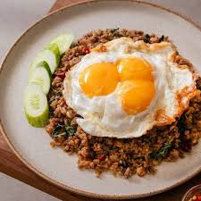
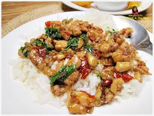
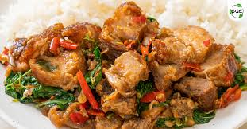

ยินดีต้อนรับสู่ ร้านสารพัดผัดกะเพรา
ความเป็นมา : เนื่องจากผัดกกะเพรา เป็นอาหารโปรดของเรา และชอบทำผัดกะเพราให้คนในบ้านกิน และทุกคนที่ได้กินผัดกะเพราฝีมือเรา ต่างก็ลงความเห็นเดียวกันว่า “เป็นผัดกะเพราที่สุดยอดมาก” ก็เลยมีไอเดียว่า “เราน่าจะเปิดร้านขายผัดกะเพรานะ” ก็เลยเป็นที่มาของร้าน “สารพัดผัดกะเพรา เดลิเวอรี่ ในวันนี้ จ้า
เกี่ยวกับเรา
สื่อมัลติมีเดีย (Multimedia)
รายการสินค้าและบริการ
| ชื่อสินค้า/บริการ | รายละเอียด | รูปภาพ | ราคา |
|---|---|---|---|
| กะเพราหมูสับ | ตั้งกระทะใส่น้ำมัน พอร้อนใส่กระเทียมและพริกสด ลงไปผัดให้พอหอม ตามด้วยหมูสับยีหมูสับให้แตกออกจากกัน ใส่ซอสหอยนางรมซีอิ๊วขาวน้ำตาลทรายเล็กน้อยลงไปคลุกเคล้าให้ทั่ว เติมน้ำเปล่าเล็กน้อย เมื่อเนื้อสัตว์สุกทั่ว ใส่ใบกระเพราลงไป ผัดคลุกเคล้าให้ใบกระเพราสุกทั่วกัน ปิดไฟและตักใส่จาน |  | 40 บาท |
| กะเพราไก่ | ตั้งกระทะใส่น้ำมันเจียวกระเทียมและพริกให้พอหอม นำเนื้อไก่สับลงไปผัด ปรุงรสด้วยซอสหอยนางรมสูตรเข้มข้น น้ำปลา ซีอิ๊วดำฉลากส้ม ตราเด็กสมบูรณ์ และน้ำตาลทราย ผัดจนเข้ากัน เร่งไฟแรงใส่กะเพราลงไปผัด ปิดไฟตักใส่จาน |  | 45 บาท |
| กะเพราหมูกรอบ | ตั้งกระทะใส่น้ำมัน นำกระเทียมและพริกไทยใส่ลงไปแล้วผัดให้มีกลิ่นหอม ใส่หมูกรอบ แล้วปรุงรสด้วย ซอสปรุงรส ซีอิ๊วดำ น้ำปลา น้ำตาลทราย น้ำเปล่า ผัดให้ส่วนผสมเข้ากัน ใส่ใบกะเพรา ตามด้วย พริกชี้ฟ้าหั่นเฉียงลงไป ผัดคลุกเคล้าให้เข้ากัน ตักเสิร์ฟใส่จาน |  | 55 บาท |
| กะเพรากุ้ง | โขลกสับพริกขี้หนูกับกระเทียมเข้าด้วยกัน เตรียมไว้ ใส่น้ำมันพืชลงในกระทะ พอร้อนใส่เครื่องโขลกลงไปผัดจนหอม ใส่กุ้งลงไปผัดพอสุก ปรุงรสด้วยน้ำตาลทราย น้ำปลา และน้ำมันหอย เติมน้ำต้มสุกเล็กน้อยหรือไม่เติมก็ได้ ผัดให้เข้ากัน ใส่ใบกะเพรา ผัดให้เข้ากันอีกครั้ง ปิดไฟตักใส่จาน |

|
50 บาท |
| กะเพราปลาหมึก | นำปลาหมึกไปลวกในน้ำเดือด ตักใส่ชามพักไว้ ตั้งกระทะใส่น้ำมันพืช ผัดพริกกับกระเทียมให้หอม ใส่ปลาหมึกลงไป ปรุงรสด้วยน้ำปลา ซีอิ๊วดำ น้ำตาลทราย และซอสปรุงรส ผัดให้เข้ากัน ตามด้วยใส่ใบกะเพราลงไป ปิดไฟ ผัดให้เข้ากันอีกรอบ ตักใส่จาน |

|
50 บาท |
| กะเพราทะเล | ใส่น้ำมันลงกระทะ นำขึ้นตั้งไฟ เมื่อน้ำมันร้อน ใส่กระเทียมที่โขลกกับพริกขี้หนูลงไปผัดจนกลิ่นหอม ใส่กุ้ง ปลาหมึก และเนื้อปลาลงผัดพอสุก เติมน้ำ แล้วปรุงรสด้วยคนอร์อร่อยชัวร์ และน้ำมันหอย ใส่ใบกะเพรา พริกชี้ฟ้า คลุกเคล้าให้เข้ากันแล้วปิดไฟ ตักใส่จาน |

|
60 บาท |
| กะเพราปู | ตำพริกและกระเทียมให้พอแหลก แล้วใส่ลงในกระทะ ผัดให้มีกลิ่นหอม พอหอมดีแล้ว จากนั้น จึงปรุงรสด้วย ซอสหอยนางรม น้ำปลา น้ำตาลทราย ผัดให้เข้ากัน แล้วค่อยใส่เนื้อปู ตามด้วย ใบกะเพรา ลงไป คลุกเคล้าให้เข้ากัน แล้วผัดให้ใบกะเพราสลด พอใบกะเพราสลดดีแล้ว ปอดไฟตักใส่จาน |

|
60 บาท |
ติดต่อเรา
ท่านสามารถติดต่อเราได้ตามช่องทางต่อไปนี้:
 เบอร์โทรศัทพ์: 062-779-4719
เบอร์โทรศัทพ์: 062-779-4719
 Line: wunsen2249
Line: wunsen2249
 IG: wunsen.ly
IG: wunsen.ly
 Feacbook:Phenrassamee Yamtiang
Feacbook:Phenrassamee Yamtiang